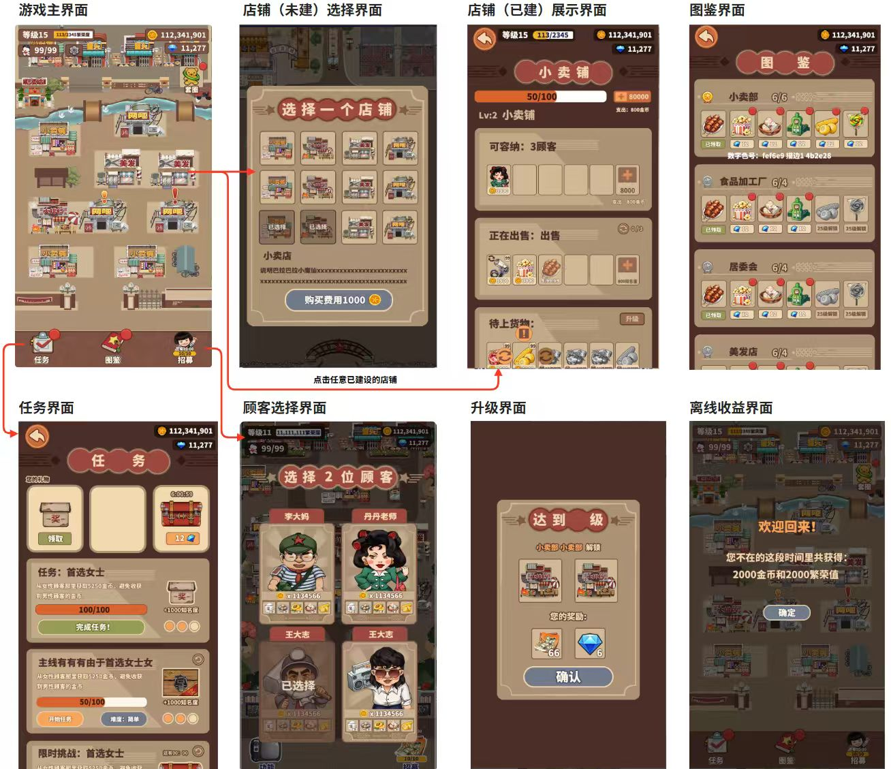
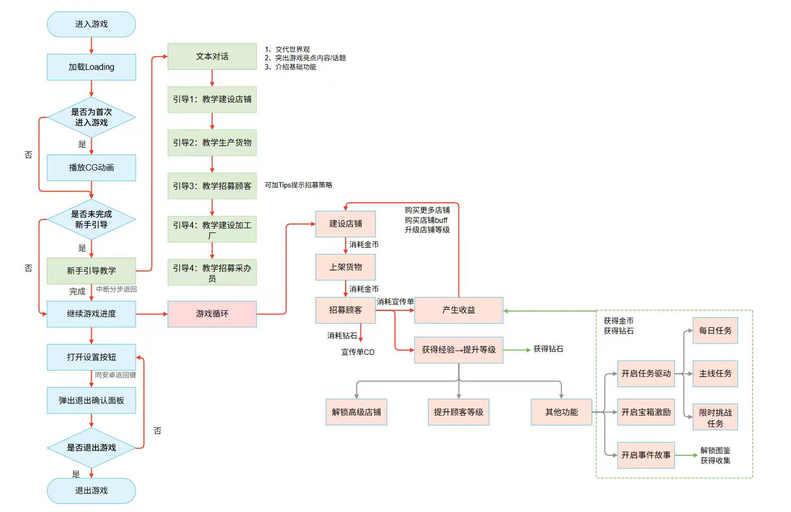
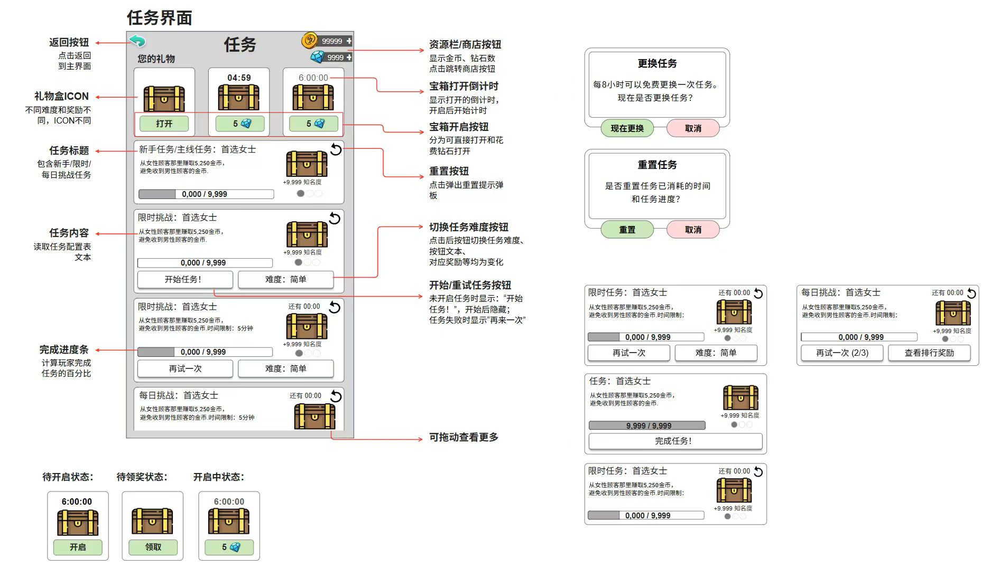
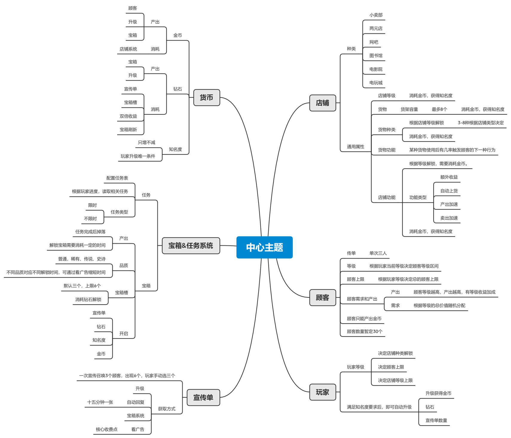

经营界面与功能跳转

设计问题
如何把经营主场景与建造、补货、顾客和成长入口组织成清晰的操作路径？
图示产出
界面关系图将场景入口、功能分区和页面目标放在一起，可用于讨论信息架构及跨界面衔接。
关键方案
- 以小镇主场景为中心，区分未建造商店的选择与已建造商店的查看。
- 任务、顾客招募、图鉴、升级和离线收益分别设置界面，保留主场景与功能页之间的跳转关系。
- 商店、商品、顾客和等级共同承接经营循环；截图中的金额与等级是方案示例，不作为实际业绩。
PROJECT JOURNAL / 设计资料摘要
经营流程、新手体验与任务状态。
SYSTEM / GAMEPLAY / UI·UE
经营小镇的方案资料，将商店建造、商品生产、顾客招募与成长连接起来，并展示新手流程和任务交互。
我的任职角色：主策划，2021.05—2022.07。资料来自用户指定的牧游科技项目目录与提供的历史截图；下方为本站整理的阅读摘要，不认定全部方案由个人独立完成，团队美术产出不归为个人美术执行。历史设计图不代表全部功能最终上线，示例数值不是经营成果。

如何把经营主场景与建造、补货、顾客和成长入口组织成清晰的操作路径？
界面关系图将场景入口、功能分区和页面目标放在一起，可用于讨论信息架构及跨界面衔接。

首次进入如何逐步建立经营认知，中断后又怎样回到尚未完成的步骤？
流程图覆盖首次进入、引导步骤、恢复分支、常规经营及退出，可作为策划、程序和测试对齐流程的讨论依据。

如何在同一任务界面里，让玩家理解当前状态、可执行动作以及高成本操作的后果？
带标注的交互线框描述按钮、状态、反馈和确认分支，支持讨论 UI/UE 交互规则，而非仅展示美术效果。
让店铺、顾客和成长资源形成相互支撑的系统，而非堆叠功能。

让店铺、顾客和成长资源形成相互支撑的系统，而非堆叠功能。
经营系统关系与资源产消框架；原图为历史方案，示例数量和档位不代表最终版本。
把经营投入和成长回报整理为可对照的配置口径。
| 设计分区 | 工作内容 | 设计用途 |
|---|---|---|
| 货物基础 | 售价 · 造价 · 数量 | 统一经营收益口径 |
| 成长配置 | 等级 · 售价 · 收益 | 对照投入与成长回报 |
| 分组检查 | 成本 · 盈利 · 均值 | 比较不同建筑的配置结构 |
把经营投入和成长回报整理为可对照的配置口径。
《物品数值》表包含货物、升级售价及转置视图；本页只重组字段关系，不公开数值、公式参数或完整配置。
从玩法和系统方案进入文档、资源需求与研发衔接。
| 设计分区 | 工作内容 | 历史记录 |
|---|---|---|
| 基础与方向 | 基础文档 · 主题 | 文档完成，主题进行中 |
| 功能与体验 | 任务宝箱 · 图鉴 · 新手 | 历史记录为完成 |
| 内容与资源 | 文案 · 角色美需 | 历史记录为完成 |
| 数值设计 | 产消 · 价格 · 增益 | 历史记录为进行中 |
从玩法和系统方案进入文档、资源需求与研发衔接。
《项目甘特图》明确记录本人策划工作项；工程验收行当时为待启动且无具体任务，不据此声称已完成验收、实际工期或正式上线。
项目目录包含系统框架、新手任务、新手引导、游戏流程及美术资源需求等材料。保留三张审核后的设计截图，并补充系统框架、物品数值和项目甘特图摘要，不上传完整内部文档、配置表或源工程；含他人身份及内部任务记录的拼接图不公开。此处不将同公司其他项目的共同职责归为本项目独立成果。